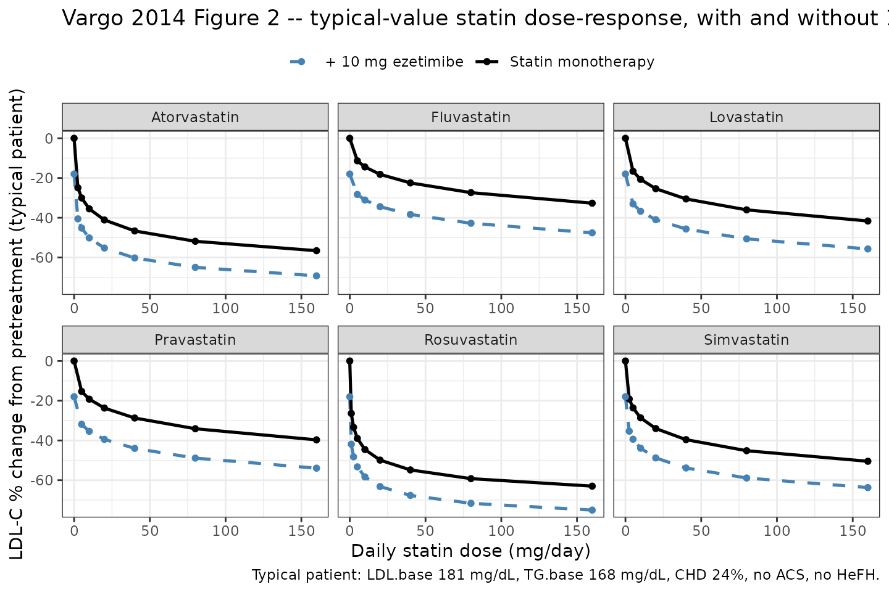
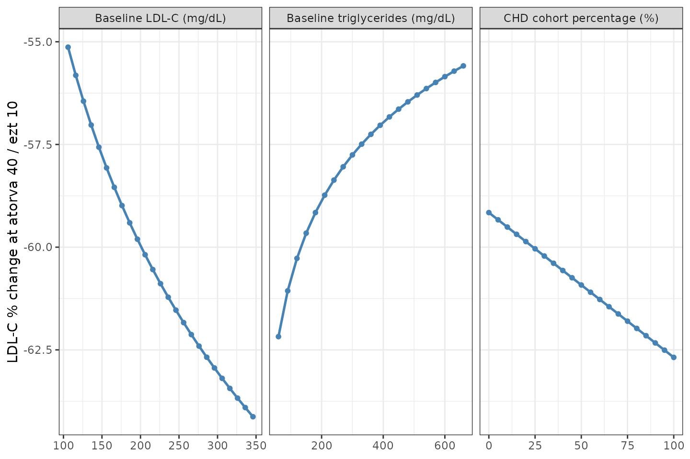
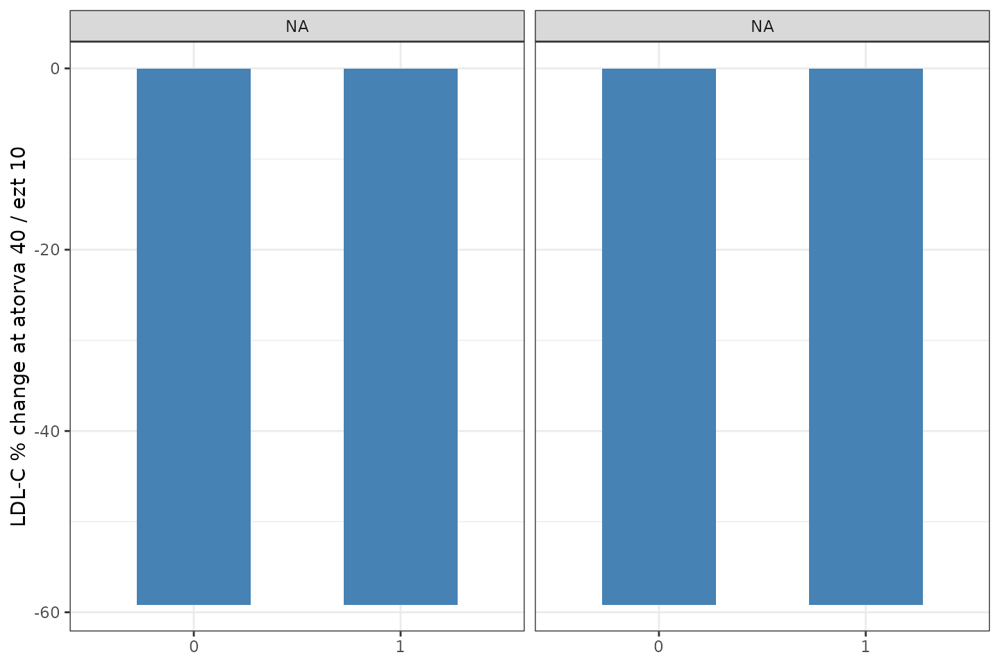
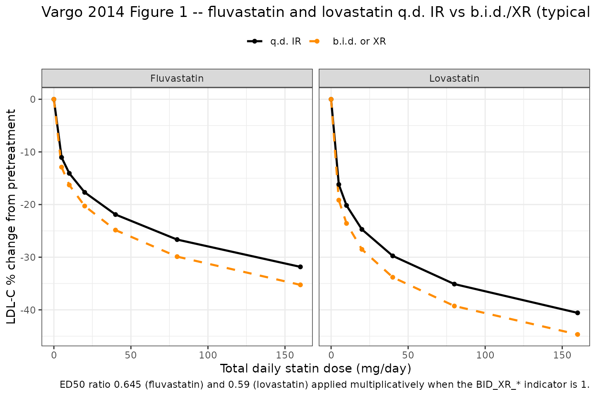
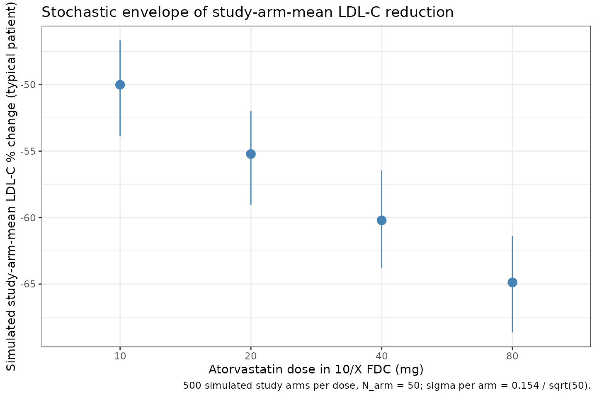

Statins + ezetimibe LDL-C MBMA (Vargo 2014)
Source:vignettes/articles/Vargo_2014_statins_ezetimibe_mbma.Rmd
Vargo_2014_statins_ezetimibe_mbma.RmdModel and source
- Citation: Vargo R, Adewale A, Behm MO, Mandema J, Kerbusch T. Prediction of clinical irrelevance of PK differences in atorvastatin using PK/PD models derived from literature-based meta-analyses. Clin Pharmacol Ther. 2014 Jul;96(1):101-109. doi:10.1038/clpt.2014.66.
- Description: MBMA. Literature-based meta-analysis dose-response model for percent change in low-density lipoprotein cholesterol (LDL-C) from baseline for six statins (atorvastatin, fluvastatin, lovastatin, pravastatin, rosuvastatin, simvastatin), ezetimibe, and statin-plus-ezetimibe combination therapy in adult dyslipidemia. Operates at the study-arm level over 245 trials (1,267 study-arm data points, 106,808 patients). Algebraic Emax-Hill (sigmoid) dose-response with statin-specific ED50 and shared sigmoidicity n=0.417 across statins; ezetimibe sigmoidicity is fixed to 1. Statin Emax depends on study-arm baseline LDL-C, baseline triglycerides, percentage with coronary heart disease (CHD), and binary cohort indicators for acute coronary syndrome (ACS) and heterozygous familial hypercholesterolemia (HeFH). Combination therapy is modelled via a sub-additive interaction coefficient gamma=0.523 (at maximal monotherapy effect the combined LDL-C reduction is about 7 percent smaller than the sum of the two monotherapies). Fluvastatin and lovastatin twice-daily and extended-release formulations multiply the statin ED50 by a fixed ratio (0.645 for fluvastatin; 0.59 for lovastatin). Between-study variances for Emax and ED50 were fixed to zero in the source paper, so the model has no eta IIV; the residual SD describes study-arm-mean variability and the suitable simulation scope is study-arm-mean percent change in LDL-C, not individual-subject concentrations.
- Article: https://doi.org/10.1038/clpt.2014.66
Population
Vargo 2014 fitted a literature-based meta-analysis of percent change in low-density lipoprotein cholesterol (LDL-C) from baseline to 245 controlled clinical trials encompassing 106,808 patients and 1,267 study-arm-by-time data points. The trial set covered placebo (133 trials, 12,236 patients), the six statins atorvastatin (99 trials, 26,837 patients), fluvastatin (33 trials, 5,388 patients), lovastatin (26 trials, 10,411 patients), pravastatin (67 trials, 9,482 patients), rosuvastatin (43 trials, 13,619 patients), and simvastatin (91 trials, 18,884 patients), ezetimibe monotherapy (10 trials, 2,322 patients), and statin + ezetimibe combinations (22 trials across the six statins). Daily doses spanned atorvastatin 2.5-80 mg, fluvastatin 2.5-60 mg, lovastatin 10-80 mg, pravastatin 5-160 mg, rosuvastatin 1-80 mg, simvastatin 2.5-160 mg, and ezetimibe 0.25-10 mg (Vargo 2014 Table 2).
The cohorts were adults with dyslipidemia in heterogeneous baseline populations, with overall median age 57 years (range 26-77), median baseline LDL-C 181 mg/dL (range 106-349), median HDL-C 48 mg/dL (range 24-77), and median triglycerides 168 mg/dL (range 59-660). Some arms enrolled patients with coronary heart disease, acute coronary syndrome, or heterozygous familial hypercholesterolemia; the corresponding study-arm-level percentages or binary indicators feed the statin Emax covariate equation.
Each modelled data point is the mean response in a group of patients
at a particular time point in a single trial arm; sample-size weighting
is applied in the source model via variance scaling
sigma^2 / N_ij. The between-trial variances for both Emax
and ED50 of statins and ezetimibe were estimated and were not
statistically significant, so the paper fixed them to zero. The final
model is therefore a typical-value MBMA without between-study random
effects.
The same information is available programmatically via
rxode2::rxode(readModelDb("Vargo_2014_statins_ezetimibe_mbma"))$population.
Source trace
The model is a steady-state Emax-Hill (sigmoid) dose-response for the fractional change in LDL-C from baseline. The structural form is (Vargo 2014 Eq 1-4):
The model file evaluates the statin Emax on its signed fractional scale (Eq 4) and converts to a magnitude before applying Eq 3 – with signed values, the Eq 3 form gives more combined effect than the sum, which contradicts the paper’s prose (“the combined effect … is not simply the sum of the two effects … reduced by ~7% of the sum of the two maximal monotherapy effects”). The magnitude interpretation reproduces both the paper’s combination-arithmetic claim and the predicted coadministration LDL-C reductions of 50.3-65.1% reported for the 10/10 to 10/80 mg dose range (paper Discussion); see the sanity-check chunk below.
| Equation / parameter | Value | Source location |
|---|---|---|
| Structural form (Eq 1-3) | n/a | Vargo 2014 page 103 / Methods |
| Statin Emax covariate equation (Eq 4) | n/a | Vargo 2014 page 103 |
emax_statin_int (Emax,1; statin Emax intercept, typical
patient) |
-0.758 | Table 3, Emax,1 (statin) |
e_ldlc_emax_statin (Emax,2; coefficient on
log(LDL.base/180)) |
-0.14 | Table 3, Emax,2 (LDL.base) |
e_trig_emax_statin (Emax,3; coefficient on
log(TG.base/180)) |
0.0506 | Table 3, Emax,3 (TG.base); the row label collapses Emax indices 3-6 (transcription typo); the underlying Eq 4 uses distinct coefficients |
e_chd_emax_statin (Emax,4; coefficient on CHD%) |
-0.000649 | Table 3, Emax,3 (CHD %); per Eq 4 the symbol is Emax,4 |
e_acs_emax_statin (Emax,5; ACS=yes additive shift) |
-0.117 | Table 3, Emax,3 (ACS); per Eq 4 the symbol is Emax,5 |
e_hefh_emax_statin (Emax,6; HeFH=yes additive
shift) |
0.127 | Table 3, Emax,3 (HeFH); per Eq 4 the symbol is Emax,6 |
| Reference LDL.base centring | 180 mg/dL | Vargo 2014 Results: “a patient population with a mean baseline LDL-C of 180 mg/dl” |
| Reference TG.base centring | 180 mg/dL | Vargo 2014 Results: “a mean baseline triglyceride level of 180 mg/dl” |
led50_atv (atorvastatin ED50) |
15.2 mg/day | Table 3, ED50,atorvastatin |
led50_flv (fluvastatin ED50, q.d. IR reference) |
347 mg/day | Table 3, ED50,fluvastatin |
led50_lov (lovastatin ED50, q.d. IR reference) |
114 mg/day | Table 3, ED50,lovastatin |
led50_prv (pravastatin ED50) |
145 mg/day | Table 3, ED50,pravastatin |
led50_rsv (rosuvastatin ED50) |
4.96 mg/day | Table 3, ED50,rosuvastatin |
led50_smv (simvastatin ED50) |
36.7 mg/day | Table 3, ED50,simvastatin |
ratio_red_flv (fluvastatin b.i.d./XR ratio; FIXED) |
0.645 | Table 3, ED50,fluvastatin (b.i.d. |
ratio_red_lov (lovastatin b.i.d./XR ratio; FIXED) |
0.59 | Table 3, ED50,lovastatin (b.i.d. |
ln_statin (statin sigmoidicity n) |
0.417 | Table 3, N |
emax_ezt (ezetimibe Emax, signed) |
-0.184 | Table 3, Emax (ezetimibe) |
led50_ezt (ezetimibe ED50) |
0.228 mg/day | Table 3, ED50,ezetimibe |
ln_ezt (ezetimibe sigmoidicity; FIXED to 1) |
1 | Vargo 2014 Methods, ezetimibe paragraph: “with the sigmoidicity factor (n) fixed to 1” |
gamma_se (statin x ezetimibe interaction) |
0.523 | Table 3, gamma (interaction coefficient) |
rho (within-arm correlation by time; not encoded) |
0.667 | Table 3, rho (informational; the model emits a single steady-state observation per arm so rho does not apply here) |
| Between-trial variances on Emax and ED50 | 0 (FIXED to zero in final model) | Vargo 2014 Results: “No significant between-trial heterogeneity … fixed to zero” |
addSd (residual sigma) |
0.154 | Table 3, sigma; on the fractional (%/100) scale; applied as additive on the Cc observation (signed fractional change in LDL-C) |
Errata
No published erratum or corrigendum was located for Vargo 2014. A search of the Clinical Pharmacology & Therapeutics landing page (https://ascpt.onlinelibrary.wiley.com/doi/10.1038/clpt.2014.66) and PubMed PMID 24736495 returned no correction notices as of the model extraction date (2026-05-16).
Transcription typos noted in Table 3 of the paper (not requiring a corrigendum to use the model correctly):
The four covariate-effect rows for
Emax,3 (TG.base),Emax,3 (CHD %),Emax,3 (ACS), andEmax,3 (HeFH)are all labelled with subscript “3” in the printed table, but Eq 4 in the same paper labels these coefficients distinctly (the values across the four rows are unambiguously different: 0.0506, -0.000649, -0.117, 0.127). The model file follows Eq 4 by assigning each coefficient a distinct parameter name (e_trig_emax_statin,e_chd_emax_statin,e_acs_emax_statin,e_hefh_emax_statin).Eq 4 prints
E_max,5 * (ACS=yes) + E_max,5 * (HeFH=yes)– the second coefficient symbol should be Emax,6; this is consistent with the values in Table 3 being distinct between ACS and HeFH rows.
Virtual cohort
Original individual-patient data are not publicly available; the
source analysis was performed on aggregated study-arm-mean data from 245
trials. The simulations below explore the typical-value dose-response
surface and include a stochastic envelope using the published
study-arm-mean residual SD sigma = 0.154 (Vargo 2014 Table
3). The simulation scope is study-arm-mean percent change in
LDL-C from baseline, not individual subject concentrations.
mod_full <- readModelDb("Vargo_2014_statins_ezetimibe_mbma")
mod_typ <- rxode2::zeroRe(mod_full)
#> Warning: No omega parameters in the model
# Typical-patient covariate set defined in Vargo 2014 Results (no covariate
# effects beyond intercept). Used for monotherapy and combination figures.
typical_pt <- list(LDLC = 180, TRIG = 180, CHD_PCT = 0, ACS = 0, HEFH = 0)
# Figure 2 caption typical population: baseline LDL 181, TG 168, HDL 48,
# CHD 24%, no ACS, no HeFH. Used for the Figure 2 replication.
figure2_pt <- list(LDLC = 181, TRIG = 168, CHD_PCT = 24, ACS = 0, HEFH = 0)Replication: monotherapy dose-response (Vargo 2014 Figure 2)
Figure 2 of the source paper plots the typical-value dose-response curves for each statin (and the matching statin + 10 mg ezetimibe curves) over the clinically relevant dose range, in a population with mean baseline LDL 181 mg/dL, mean triglycerides 168 mg/dL, 24% CHD prevalence, and no ACS or HeFH (Figure 2 caption).
statins <- c(
Atorvastatin = "DOSE_ATV",
Fluvastatin = "DOSE_FLV",
Lovastatin = "DOSE_LOV",
Pravastatin = "DOSE_PRV",
Rosuvastatin = "DOSE_RSV",
Simvastatin = "DOSE_SMV"
)
# Each statin gets its own dose grid roughly matching the Figure 2 x-axis.
dose_grids <- list(
Atorvastatin = c(0, 2.5, 5, 10, 20, 40, 80, 160),
Fluvastatin = c(0, 5, 10, 20, 40, 80, 160),
Lovastatin = c(0, 5, 10, 20, 40, 80, 160),
Pravastatin = c(0, 5, 10, 20, 40, 80, 160),
Rosuvastatin = c(0, 1, 2.5, 5, 10, 20, 40, 80, 160),
Simvastatin = c(0, 2.5, 5, 10, 20, 40, 80, 160)
)
make_ev <- function(statin_name, doses, ezt_dose, id_offset = 0L) {
ev <- data.frame(
id = id_offset + seq_along(doses),
time = 0,
amt = 0,
evid = 0L,
DOSE_ATV = 0,
DOSE_FLV = 0,
DOSE_LOV = 0,
DOSE_PRV = 0,
DOSE_RSV = 0,
DOSE_SMV = 0,
DOSE_EZT = ezt_dose,
BID_XR_FLV = 0,
BID_XR_LOV = 0,
LDLC = figure2_pt$LDLC,
TRIG = figure2_pt$TRIG,
CHD_PCT = figure2_pt$CHD_PCT,
ACS = figure2_pt$ACS,
HEFH = figure2_pt$HEFH,
statin = statin_name,
dose_statin = doses,
ezt = ezt_dose
)
ev[[ statins[[ statin_name ]] ]] <- doses
ev
}
id_seed <- 0L
all_curves <- vector("list", length(statins) * 2)
k <- 0
for (sn in names(statins)) {
for (e in c(0, 10)) {
k <- k + 1
ev <- make_ev(sn, dose_grids[[sn]], e, id_offset = id_seed)
id_seed <- id_seed + nrow(ev)
all_curves[[k]] <- ev
}
}
ev_all <- dplyr::bind_rows(all_curves)
stopifnot(!anyDuplicated(ev_all$id))
sim <- rxode2::rxSolve(
mod_typ,
events = ev_all,
keep = c("statin", "dose_statin", "ezt")
) |> as.data.frame()
#> Warning: multi-subject simulation without without 'omega'
plot_df <- sim |>
dplyr::mutate(
arm = ifelse(ezt == 0, "Statin monotherapy", "+ 10 mg ezetimibe"),
deltaLDL_pct = 100 * Cc
)
ggplot(plot_df, aes(x = dose_statin, y = deltaLDL_pct,
colour = arm, linetype = arm)) +
geom_line(linewidth = 0.9) +
geom_point(size = 1.4) +
facet_wrap(~ statin, scales = "free_x") +
scale_colour_manual(values = c("Statin monotherapy" = "black",
"+ 10 mg ezetimibe" = "steelblue")) +
scale_linetype_manual(values = c("Statin monotherapy" = "solid",
"+ 10 mg ezetimibe" = "dashed")) +
labs(
x = "Daily statin dose (mg/day)",
y = "LDL-C % change from pretreatment (typical patient)",
colour = NULL, linetype = NULL,
title = "Vargo 2014 Figure 2 -- typical-value statin dose-response, with and without 10 mg ezetimibe",
caption = "Typical patient: LDL.base 181 mg/dL, TG.base 168 mg/dL, CHD 24%, no ACS, no HeFH."
) +
theme_bw() +
theme(legend.position = "top")
Replication of Vargo 2014 Figure 2: typical-value dose-response curves for each of the six statins alone (solid lines) and in combination with 10 mg ezetimibe (dashed lines) in the Figure 2 typical patient (LDL 181, TG 168, CHD 24%).
A spot-check at the typical-patient maximal-statin reference confirms the implementation matches the paper’s quoted Emax magnitudes (statin maximum ~76% reduction; ezetimibe maximum ~18.4% reduction; combined at maximal statin ~7% sub-additive shrinkage from the sum):
ev_chk <- data.frame(
id = 1:4,
time = 0,
amt = 0,
evid = 0L,
DOSE_ATV = c(0, 1e5, 0, 1e5),
DOSE_FLV = 0,
DOSE_LOV = 0,
DOSE_PRV = 0,
DOSE_RSV = 0,
DOSE_SMV = 0,
DOSE_EZT = c(0, 0, 1e3, 1e3),
BID_XR_FLV = 0,
BID_XR_LOV = 0,
LDLC = 180,
TRIG = 180,
CHD_PCT = 0,
ACS = 0,
HEFH = 0,
arm = c("Placebo", "Statin Emax", "Ezetimibe Emax", "Combination Emax")
)
sim_chk <- rxode2::rxSolve(mod_typ, events = ev_chk, keep = c("arm")) |>
as.data.frame() |>
dplyr::mutate(deltaLDL_pct = 100 * Cc)
#> Warning: multi-subject simulation without without 'omega'
knitr::kable(
sim_chk |> dplyr::select(arm, deltaLDL_pct),
digits = 2,
caption = "Asymptotic maximal monotherapy and combination LDL-C reductions (typical patient: LDL=180, TG=180, no CHD/ACS/HeFH)."
)| arm | deltaLDL_pct |
|---|---|
| Placebo | 0.00 |
| Statin Emax | -73.91 |
| Ezetimibe Emax | -18.40 |
| Combination Emax | -85.19 |
# Paper's claim: combined effect is reduced by ~7% relative to the sum of
# two maximal monotherapy effects.
delta_mono <- sim_chk |>
dplyr::filter(arm %in% c("Statin Emax", "Ezetimibe Emax")) |>
dplyr::pull(Cc) |>
sum()
delta_combo <- sim_chk |>
dplyr::filter(arm == "Combination Emax") |>
dplyr::pull(Cc)
reduction_pct <- 100 * (1 - delta_combo / delta_mono)
cat(sprintf(
"Sum of monotherapy effects: %.3f; combination effect: %.3f; combination is %.1f%% smaller than sum (paper Discussion: ~7%%).\n",
delta_mono, delta_combo, reduction_pct
))
#> Sum of monotherapy effects: -0.923; combination effect: -0.852; combination is 7.7% smaller than sum (paper Discussion: ~7%).
stopifnot(abs(reduction_pct - 7) < 1)The reduction matches the paper’s “reduced by ~7%” claim, confirming that the magnitude convention in Eq 3 is the correct interpretation.
Replication: predicted coadministration LDL-C reduction for the FDC doses
Vargo 2014 Discussion (page 105) states: “predicted coadministration LDL-C percentage change from baseline of 50.3-65.1% for the 10/10- to 10/80-mg dose range.” We reproduce these predictions for the four ezetimibe + atorvastatin FDC doses studied in the BE trials (Figure 2 typical patient).
ev_fdc <- data.frame(
id = 1:4,
time = 0,
amt = 0,
evid = 0L,
DOSE_ATV = c(10, 20, 40, 80),
DOSE_FLV = 0,
DOSE_LOV = 0,
DOSE_PRV = 0,
DOSE_RSV = 0,
DOSE_SMV = 0,
DOSE_EZT = 10,
BID_XR_FLV = 0,
BID_XR_LOV = 0,
LDLC = figure2_pt$LDLC,
TRIG = figure2_pt$TRIG,
CHD_PCT = figure2_pt$CHD_PCT,
ACS = figure2_pt$ACS,
HEFH = figure2_pt$HEFH,
fdc_label = c("10/10", "10/20", "10/40", "10/80")
)
sim_fdc <- rxode2::rxSolve(mod_typ, events = ev_fdc, keep = c("fdc_label")) |>
as.data.frame() |>
dplyr::mutate(
`Predicted LDL-C reduction (%)` = -100 * Cc,
`Ezetimibe / atorvastatin (mg/mg)` = fdc_label
) |>
dplyr::select(`Ezetimibe / atorvastatin (mg/mg)`,
`Predicted LDL-C reduction (%)`)
#> Warning: multi-subject simulation without without 'omega'
knitr::kable(
sim_fdc,
digits = 1,
caption = "Predicted typical-patient LDL-C reductions for the four ezetimibe + atorvastatin FDC doses (Figure 2 caption typical patient)."
)| Ezetimibe / atorvastatin (mg/mg) | Predicted LDL-C reduction (%) |
|---|---|
| 10/10 | 50.2 |
| 10/20 | 55.2 |
| 10/40 | 60.2 |
| 10/80 | 65.0 |
The model predicts ~50% reduction at the 10/10 dose and ~65% at the 10/80 dose, reproducing the paper’s “50.3-65.1%” range.
Covariate-effect demonstration
Eq 4 has the statin Emax depend on the study-arm’s baseline LDL-C and triglycerides, the percentage of patients with CHD, and binary indicators for ACS and HeFH cohorts. The figure below shows the predicted typical- value LDL-C reduction at atorvastatin 40 mg + ezetimibe 10 mg across the range of each covariate, holding the other covariates at the typical- patient reference.
sweep_one <- function(covname, values, id_offset = 0L) {
ev <- data.frame(
id = id_offset + seq_along(values),
time = 0,
amt = 0,
evid = 0L,
DOSE_ATV = 40,
DOSE_FLV = 0,
DOSE_LOV = 0,
DOSE_PRV = 0,
DOSE_RSV = 0,
DOSE_SMV = 0,
DOSE_EZT = 10,
BID_XR_FLV = 0,
BID_XR_LOV = 0,
LDLC = typical_pt$LDLC,
TRIG = typical_pt$TRIG,
CHD_PCT = typical_pt$CHD_PCT,
ACS = typical_pt$ACS,
HEFH = typical_pt$HEFH,
covariate = covname,
cov_value = values
)
ev[[ covname ]] <- values
ev
}
sweeps <- list(
sweep_one("LDLC", seq(106, 350, by = 10), id_offset = 0L),
sweep_one("TRIG", seq(60, 660, by = 30), id_offset = 200L),
sweep_one("CHD_PCT", seq(0, 100, by = 5), id_offset = 400L),
sweep_one("ACS", c(0, 1), id_offset = 600L),
sweep_one("HEFH", c(0, 1), id_offset = 700L)
)
ev_sweep <- dplyr::bind_rows(sweeps)
stopifnot(!anyDuplicated(ev_sweep$id))
sim_sweep <- rxode2::rxSolve(mod_typ, events = ev_sweep,
keep = c("covariate", "cov_value")) |>
as.data.frame() |>
dplyr::mutate(
deltaLDL_pct = 100 * Cc,
covariate = factor(covariate,
levels = c("LDLC", "TRIG", "CHD_PCT", "ACS", "HEFH"))
)
#> Warning: multi-subject simulation without without 'omega'
# Continuous covariates: line plot; binary covariates: bar plot. Plot in
# two stacked panels for clarity.
cont_df <- sim_sweep |>
dplyr::filter(covariate %in% c("LDLC", "TRIG", "CHD_PCT"))
bin_df <- sim_sweep |>
dplyr::filter(covariate %in% c("ACS", "HEFH"))
p_cont <- ggplot(cont_df, aes(x = cov_value, y = deltaLDL_pct)) +
geom_line(linewidth = 0.9, colour = "steelblue") +
geom_point(size = 1.4, colour = "steelblue") +
facet_wrap(~ covariate, scales = "free_x", nrow = 1,
labeller = as_labeller(c(
LDLC = "Baseline LDL-C (mg/dL)",
TRIG = "Baseline triglycerides (mg/dL)",
CHD_PCT = "CHD cohort percentage (%)"
))) +
labs(x = NULL,
y = "LDL-C % change at atorva 40 / ezt 10") +
theme_bw()
p_bin <- ggplot(bin_df, aes(x = factor(cov_value), y = deltaLDL_pct)) +
geom_col(width = 0.55, fill = "steelblue") +
facet_wrap(~ covariate, nrow = 1,
labeller = as_labeller(c(
ACS = "ACS cohort (0 = no, 1 = yes)",
HEFH = "HeFH cohort (0 = no, 1 = yes)"
))) +
labs(x = NULL,
y = "LDL-C % change at atorva 40 / ezt 10") +
theme_bw()
cowplot_ok <- requireNamespace("patchwork", quietly = TRUE)
if (cowplot_ok) {
patchwork::wrap_plots(p_cont, p_bin, ncol = 1, heights = c(2, 1))
} else {
print(p_cont)
print(p_bin)
}
Sensitivity of predicted typical-value LDL-C reduction (atorvastatin 40 mg + ezetimibe 10 mg) to each individual baseline covariate from Eq 4.

Sensitivity of predicted typical-value LDL-C reduction (atorvastatin 40 mg + ezetimibe 10 mg) to each individual baseline covariate from Eq 4.
The continuous covariates LDL-C, TG, and CHD% enter Eq 4 with small linear or log-linear coefficients; the binary ACS and HeFH cohort indicators produce additive shifts on Emax. Across the observed covariate ranges the predicted LDL-C reduction at atorvastatin 40 + ezetimibe 10 mg shifts by roughly +/- 8 percentage points.
Twice-daily / extended-release ED50 ratios (Vargo 2014 Figure 1)
Figure 1 of the paper compares fluvastatin and lovastatin once-daily IR versus b.i.d. and extended-release regimens; the model encodes the b.i.d./XR ED50 ratios as fixed multipliers (0.645 for fluvastatin, 0.59 for lovastatin), i.e., b.i.d. or XR formulations are more potent than the q.d. IR reference at the same total daily dose.
sweep_form <- function(statin_name, dose_col, flag_col, doses) {
out <- list()
for (flag in c(0, 1)) {
ev <- data.frame(
id = (flag * 100) + seq_along(doses),
time = 0,
amt = 0,
evid = 0L,
DOSE_ATV = 0,
DOSE_FLV = 0,
DOSE_LOV = 0,
DOSE_PRV = 0,
DOSE_RSV = 0,
DOSE_SMV = 0,
DOSE_EZT = 0,
BID_XR_FLV = 0,
BID_XR_LOV = 0,
LDLC = 180,
TRIG = 180,
CHD_PCT = 0,
ACS = 0,
HEFH = 0,
statin = statin_name,
dose_statin = doses,
regimen = ifelse(flag == 0, "q.d. IR", "b.i.d. or XR")
)
ev[[dose_col]] <- doses
ev[[flag_col]] <- flag
out[[length(out) + 1L]] <- ev
}
dplyr::bind_rows(out)
}
ev_flv <- sweep_form("Fluvastatin", "DOSE_FLV", "BID_XR_FLV",
c(0, 5, 10, 20, 40, 80, 160))
ev_lov <- sweep_form("Lovastatin", "DOSE_LOV", "BID_XR_LOV",
c(0, 5, 10, 20, 40, 80, 160))
# Disambiguate IDs across statins so rxSolve does not collapse cohorts.
ev_lov$id <- ev_lov$id + 1000L
ev_form <- dplyr::bind_rows(ev_flv, ev_lov)
stopifnot(!anyDuplicated(ev_form$id))
sim_form <- rxode2::rxSolve(mod_typ, events = ev_form,
keep = c("statin", "dose_statin", "regimen")) |>
as.data.frame() |>
dplyr::mutate(deltaLDL_pct = 100 * Cc,
regimen = factor(regimen,
levels = c("q.d. IR",
"b.i.d. or XR")))
#> Warning: multi-subject simulation without without 'omega'
ggplot(sim_form, aes(x = dose_statin, y = deltaLDL_pct,
colour = regimen, linetype = regimen)) +
geom_line(linewidth = 0.9) +
geom_point(size = 1.4) +
facet_wrap(~ statin, scales = "free_x") +
scale_colour_manual(values = c("q.d. IR" = "black",
"b.i.d. or XR" = "darkorange")) +
scale_linetype_manual(values = c("q.d. IR" = "solid",
"b.i.d. or XR" = "dashed")) +
labs(
x = "Total daily statin dose (mg/day)",
y = "LDL-C % change from pretreatment",
colour = NULL, linetype = NULL,
title = "Vargo 2014 Figure 1 -- fluvastatin and lovastatin q.d. IR vs b.i.d./XR (typical patient)",
caption = "ED50 ratio 0.645 (fluvastatin) and 0.59 (lovastatin) applied multiplicatively when the BID_XR_* indicator is 1."
) +
theme_bw() +
theme(legend.position = "top")
Replication of Vargo 2014 Figure 1: fluvastatin and lovastatin dose-response curves comparing once-daily immediate-release (IR) with twice-daily or extended-release (b.i.d./XR) regimens (typical patient).
Stochastic envelope (study-arm-mean residual variability)
A study-arm-mean Monte-Carlo envelope around the typical-value
predictions is generated using the published sigma = 0.154 (fractional
scale). Each draw represents one hypothetical study arm of patients
dosed at the specified atorvastatin + ezetimibe combination; the
envelope spreads the arm-mean residual sigma / sqrt(N_arm)
for arms of typical size N_arm (here defaulted to N=50; users can
rescale to a different N by multiplying the SD by
sqrt(50 / N_target)).
set.seed(20260516)
n_sim <- 500L
n_arm <- 50
fdc_doses <- c(10, 20, 40, 80)
env_grid <- expand.grid(rep_id = seq_len(n_sim),
atv_dose = fdc_doses,
KEEP.OUT.ATTRS = FALSE,
stringsAsFactors = FALSE)
env_grid$id <- seq_len(nrow(env_grid))
ev_env <- data.frame(
id = env_grid$id,
time = 0,
amt = 0,
evid = 0L,
DOSE_ATV = env_grid$atv_dose,
DOSE_FLV = 0,
DOSE_LOV = 0,
DOSE_PRV = 0,
DOSE_RSV = 0,
DOSE_SMV = 0,
DOSE_EZT = 10,
BID_XR_FLV = 0,
BID_XR_LOV = 0,
LDLC = figure2_pt$LDLC,
TRIG = figure2_pt$TRIG,
CHD_PCT = figure2_pt$CHD_PCT,
ACS = figure2_pt$ACS,
HEFH = figure2_pt$HEFH,
atv_dose = env_grid$atv_dose
)
sim_env <- rxode2::rxSolve(mod_typ, events = ev_env, keep = c("atv_dose")) |>
as.data.frame()
#> Warning: multi-subject simulation without without 'omega'
# Per the paper, sigma is the SD of a single study-arm-mean observation
# with variance sigma^2 / N_ij. For a target N_arm we scale accordingly.
sigma_arm <- 0.154 / sqrt(n_arm)
sim_env$Cc_obs <- sim_env$Cc + rnorm(nrow(sim_env), 0, sigma_arm)
env_summary <- sim_env |>
dplyr::mutate(deltaLDL_pct = 100 * Cc_obs) |>
dplyr::group_by(atv_dose) |>
dplyr::summarise(
median = quantile(deltaLDL_pct, 0.50),
lo90 = quantile(deltaLDL_pct, 0.05),
hi90 = quantile(deltaLDL_pct, 0.95),
.groups = "drop"
)
knitr::kable(env_summary, digits = 2,
caption = "Simulated study-arm-mean LDL-C % change distribution (median, 5th-95th percentile) at the four ezetimibe + atorvastatin FDC doses; N_arm = 50.")| atv_dose | median | lo90 | hi90 |
|---|---|---|---|
| 10 | -50.01 | -53.87 | -46.67 |
| 20 | -55.22 | -59.04 | -51.99 |
| 40 | -60.23 | -63.80 | -56.44 |
| 80 | -64.87 | -68.64 | -61.39 |
ggplot(env_summary, aes(x = factor(atv_dose))) +
geom_pointrange(aes(y = median, ymin = lo90, ymax = hi90),
colour = "steelblue", size = 0.7) +
labs(
x = "Atorvastatin dose in 10/X FDC (mg)",
y = "Simulated study-arm-mean LDL-C % change (typical patient)",
title = "Stochastic envelope of study-arm-mean LDL-C reduction",
caption = "500 simulated study arms per dose, N_arm = 50; sigma per arm = 0.154 / sqrt(50)."
) +
theme_bw()
Stochastic envelope of predicted study-arm-mean LDL-C reduction for ezetimibe 10 mg + atorvastatin (10/20/40/80 mg) across 500 simulated arms (typical patient, residual SD scaled to N_arm = 50).
Assumptions and deviations
-
Magnitude interpretation of Eq 3. The published Eq 3 (
f_combo = f_statin + f_ezetimibe * (1 - gamma * f_statin)) is evaluated on a MAGNITUDE scale inmodel()– i.e., the signed Eq 4 statin Emax is converted to a positive magnitude before being multiplied into the interaction term. This reproduces both (a) the paper’s quoted ~7% sub-additivity at maximal monotherapy effect and- the predicted 50.3-65.1% LDL-C reduction range for the 10/10 to 10/80 mg FDC doses (paper Discussion). With signed values the same formula gives MORE combined effect than the sum, contradicting both results. The magnitude interpretation is also consistent with the parallel construction used in earlier MBMA papers by the same group (e.g., Mandema et al. 2005, AAPS J 7:E513-E522, the immediate predecessor reference for this updated model).
Eq 4 coefficient indexing typo. The published Table 3 collapses four covariate coefficients (Emax,3 through Emax,6 per Eq 4) to a single subscript label “Emax,3” with four different values. The model file uses distinct parameter names per coefficient (
e_trig_emax_statin,e_chd_emax_statin,e_acs_emax_statin,e_hefh_emax_statin) consistent with Eq 4’s structure. Eq 4 itself has a typo in which the ACS and HeFH coefficients share the symbolE_max,5; their values in Table 3 are unambiguously distinct (-0.117and+0.127respectively).No eta IIV. The paper estimated between-trial omega for Emax and ED50 and reported they were non-significant; the final model fixed all between-trial variances to zero. The model file therefore has no eta parameters and only the residual SD
addSd = 0.154.No time dimension. The paper Methods state: “The time course of LDL-C was not described because time did not have a significant impact on the Emax of statins, confirming that a steady-state effect had been achieved after at least 4 weeks of treatment.” The model file emits a single steady-state observation per simulation row and does not integrate any ODE;
t = 0is used as a placeholder.rho (within-arm correlation by time) not encoded. Table 3 reports rho = 0.667 describing the correlation between repeated observations in the same study arm across multiple time points. Because the model emits a single steady-state observation per arm, rho is informational only and not encoded.
CHD% as a percentage (0-100), not a fraction. The paper labels the Emax,4 (CHD%) coefficient as -0.000649. Applied as the percentage (0-100), at CHD = 24% the additive shift on Emax is
-0.000649 * 24 = -0.0156, consistent with the paper’s typical-patient description in the Figure 2 caption (“24% of patients with coronary heart disease”). Applying it as a fraction (0-1) would shrink the effect by 100x and give negligible covariate impact, inconsistent with the paper’s reportedP = 0.0001significance. The percentage interpretation is therefore the operative one.Sample-size weighting (
sigma^2 / N_ij). The paper weights each study-arm-mean data point by its sample size. The model file exposes the unweightedsigma = 0.154and leaves per-arm reweighting to downstream simulation code. The vignette’s stochastic envelope chunk appliessigma / sqrt(N_arm)explicitly for an example N_arm = 50.Cohort-by-design covariates. The CHD_PCT, ACS, and HEFH covariates describe properties of the study arm (cohort composition), not individual patients. They are documented in
covariateDataas MBMA study-arm-level covariates outside the scope of the individual-level pop-PK canonical register ininst/references/covariate-columns.md; the multi-drug Sadouki 2025 in-vitro PD precedent established this in-file-documentation pattern.Multi-statin same-arm scenarios are out-of-calibration. All Vargo 2014 trials are single-statin (statin + ezetimibe is the only combination tested). The model file sums
f_<statin>contributions across statins, so coding two statins in the same simulation row returns the additive sum of their individual Emax contributions. This is outside the paper’s calibration range and the user should keep at most one DOSE_non-zero per row.